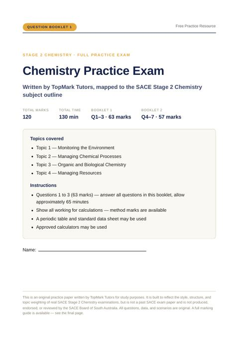
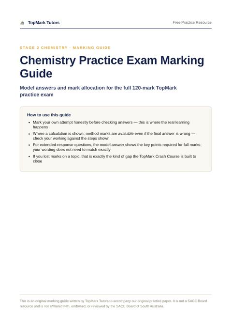
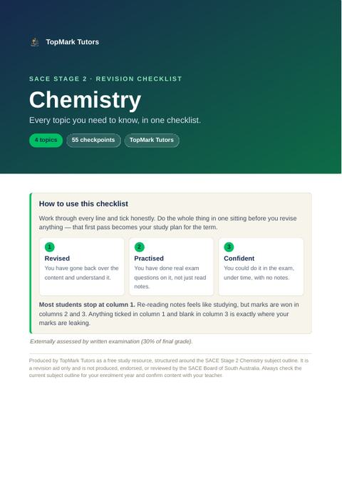
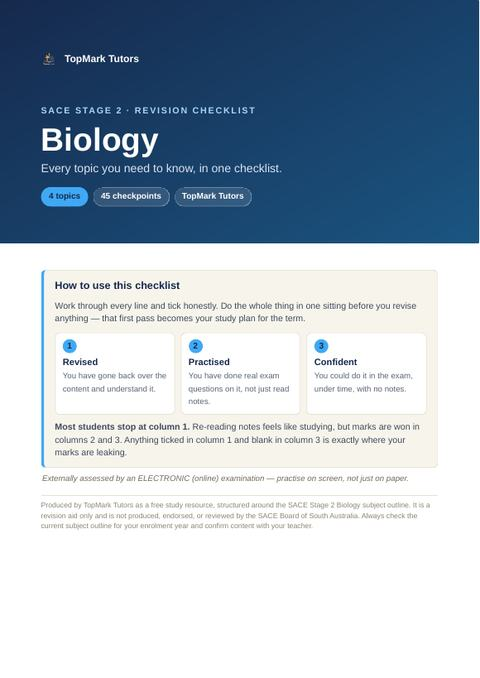
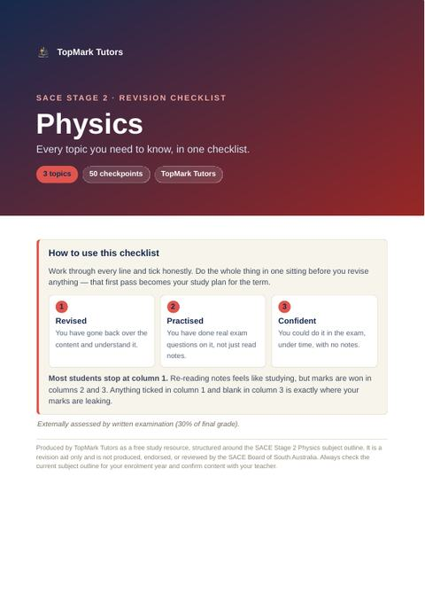
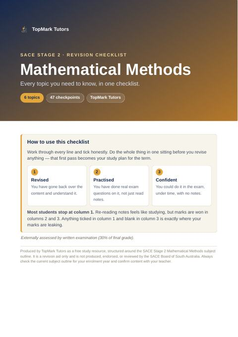
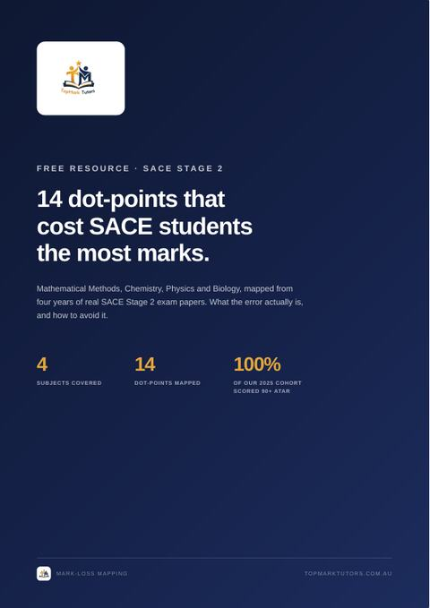

Practice examChemistry Practice Exam
19 pages • 120 marks • 130 minutes
A full Stage 2 Chemistry paper written by TopMark and mapped to the subject outline. Two booklets, 63 marks and 57 marks, sat under real exam timing. The closest thing to the real paper you can get before November.
Download PDFSign up to unlock
Marking guideChemistry Marking Guide
11 pages • Model answers • Mark allocation
The companion to the practice exam. Model answers, where each mark is awarded, and the method marks you still earn when the final answer is wrong. Mark your own attempt honestly before you read it.
Download PDFSign up to unlock
ChecklistChemistry Revision Checklist
7 pages • 4 topics • 55 checkpoints
Monitoring the Environment, Managing Chemical Processes, Organic and Biological Chemistry, Managing Resources. Every checkpoint you are expected to know, in one list.
Download PDFSign up to unlock
ChecklistBiology Revision Checklist
6 pages • 4 topics • 45 checkpoints
DNA and Proteins, Cells as the Basis of Life, Homeostasis, Evolution. Work through it in one sitting and the gaps you find become your study plan.
Download PDFSign up to unlock
ChecklistPhysics Revision Checklist
8 pages • 3 topics • 50 checkpoints
Motion and Relativity, Electricity and Magnetism, Light and Atoms. Every dot-point the subject outline expects, written so you can tick it honestly.
Download PDFSign up to unlock
ChecklistMathematical Methods Checklist
8 pages • 6 topics • 47 checkpoints
Further Differentiation, Discrete Random Variables, Integral Calculus, Logarithmic Functions, Continuous Random Variables and the Normal Distribution, Sampling and Confidence Intervals.
Download PDFSign up to unlock
Guide14 Dot-Points That Cost Marks
The original TopMark guide • 4 subjects
Four years of real SACE papers, every question mapped back to the dot-point it tested. The fourteen points that cost students the most marks, and how to fix each one.
Download PDFSign up to unlock